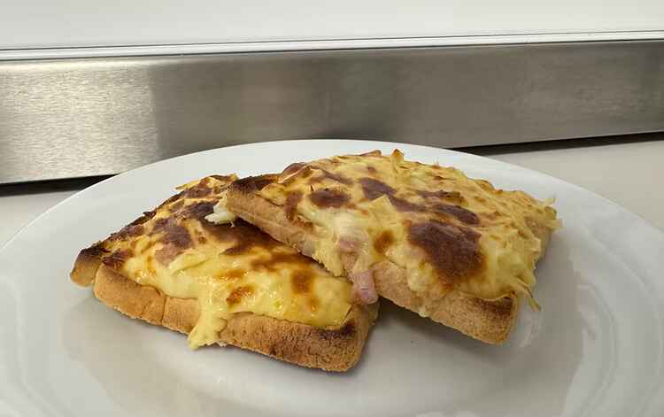

Home
Welsh Rarebit

Description
This dish is surprisingly hearty for its small size,
and can be prepared in a matter of minutes!
Ingredients
- 2 Slices Of Bread, any type
- 125g Cheese/Cheeses of choice, Grated
- 2 Egg Yolks
- 2 tablespoons of milk or cream
- A Splash of Worcestershire Sauce
- A Pinch of Salt
Method
- Separate your egg yolks from the
whites and discard the whites in a separate bowl,
if you have no use for them, they can be thrown away.
- To a bowl, add your egg yolks, milk or cream & cheese/cheeses
and mix until thoroughly combined.
- Add a splash of Worcestershire sauce
and a pinch of salt and mix until incorporated.
- Grill or toast your bread, we recommend grilling
one side until your desired crispness.
- Allow the toast to cool for roughly two minutes.
- Once cooled, (if you grilled flip your bread over
to the soft side for this step.) Apply your mixture
evenly to the bread and place under the grill (on a medium heat)
for around 5-8 minutes, ensuring to keep a close eye
so that nothing burns.
- Once there is a nice browning on top remove from
the oven and cool for a minute or 2.